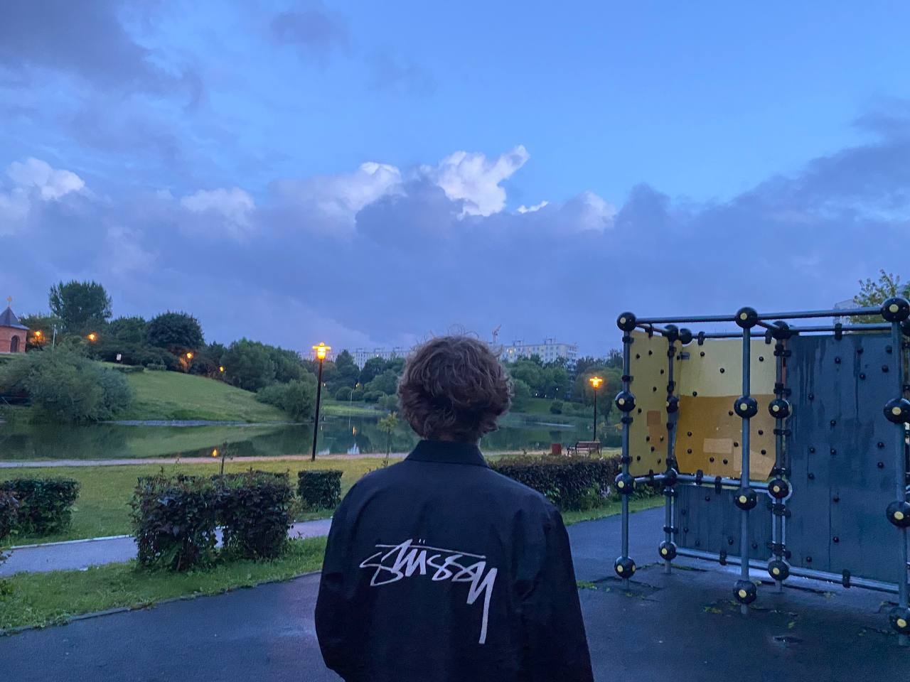

«Я живу в центре Манхэттена, на 81ой стрит,
на 11 этаже здания американ гарден. Меня зовут Патрик Бейтман, мне 27 лет. Я слежу за собой, соблюдаю диету
занимаюсь физическими упражнениями. По утрам если лицо немного отекло я накладываю маску со льдом пока качаю
пресс, я знаю тысячи таких упражнений,

после того как я снимаю маску, я использую ласьен для очистки пор,
принимая душ я пользуюсь очищающем гелем, затем специальным моющем средством для тела с экстрактом меда и
мендаля, затем я делаю себе косметическую маску из крема, оставляю ее на 10 минут пока занимаюсь другими
делами. Я всегда пользуюсь ласьеном после бритья в котором нет спирта, потому что спирт сушит кожу и старит
лицо. Потом увлажняющий крем, бальзам исправляющий морщины вокруг глаз, и наконец заключительный увлажняющий
ласьен. Всеобщее представление о Патрике Бейтоне всего лиш абстракция. На самом деле это не я, это только
призрак, иллюзия, и когда я могу спрятать свой колючий взгляд, вы можете пожать мне руку и почувствовать
прикосновение плоти, вы даже можете подумать что мы ведем похожий образ жизни. Но это не так, я из другого
мира».
Детский психолог
Запуск речи. Логопедический массаж. Развитием общей, мелкой моторики. Проработка речи. Более подробная информация
This is a wider card with supporting text below as a natural lead-in to additional content. This card has even longer content than the first to show that equal height action.